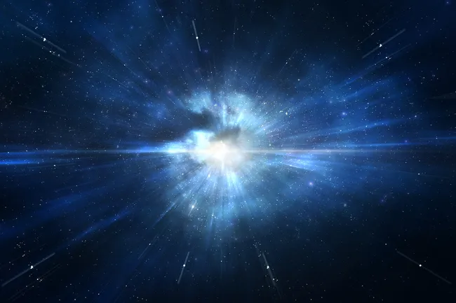
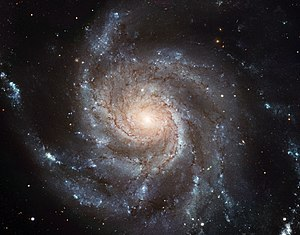

Az univerzum kezdete
Senki sem tudja, hogy mekkora a világegyetem, s függ-e a mérete a benne lévő anyag mennyiségétől.
Az anyag maga is egy eléggé meghatározatlan fogalom, s még ma is más-más definíciókkal illetik a tudomány más-más szegmensei.
Jelenlegi ismereteink szerint a világegyetem kora 13,8 ± 0,02 milliárd év.
Hogy mennyi galaxis, és csillag van ebben a hatalmas térben, melyben élünk, arról nem tudunk semmi biztosat, ugyanis még néhány évvel, évtizeddel ezelőtt sem volt közös egyetértés a kérdésben.
Míg az 1970-es évek elején mintegy 30 milliárd galaxist, Fodor Lajos István 1979-ben csupán 10 milliárdot, Hawking 1982-ben már több százmilliárdot, Sagan 1996-ban kereken 100 milliárdot feltételezett.

Ős robbanás
A kozmológiában az ősrobbanás (más néven „nagy bumm”, angolul „The Big Bang”) egy olyan tudományos elmélet, mely szerint a világegyetem egy rendkívül sűrű, forró állapotból fejlődött ki nagyjából 13,8 milliárd évvel ezelőtt.
Az elméletet Georges Lemaître (1894–1966) belga pap, a Leuveni Katolikus Egyetem fizika és csillagászat tanára dolgozta ki először 1931-ben „ősatom” név alatt.
Az ősrobbanás-elmélet azon a megfigyelésen – az úgynevezett Hubble–Lemaître-törvényen (2018 előtt Hubble-törvény) – alapul, amely szerint a galaxisok színképvonalai vöröseltolódást szenvednek. Ez a tény a kozmológia elméletével összevetve azt mutatja, hogy a tér az általános relativitáselmélet Friedmann–Lemaître-modellje szerint folyamatosan tágul. Ha a múltba extrapoláljuk az univerzum jelenlegi állapotát, akkor ezek a megfigyelések azt mutatják, hogy a világegyetem egy olyan állapotból kezdett tágulni, melyben az anyag és az energia rendkívüli hőmérsékletű és végtelen sűrűségű volt.
Galaxisok

A galaxisok égitestek: csillagok, csillagközi gázok, por és a láthatatlan sötét anyag nagy kiterjedésű, gravitációsan kötött rendszerei. Egy tipikus galaxisban tízmillió és ezermilliárd (107 – 1012) közötti számú csillag található, és mind azonos középpont körül kering. A magányos csillagokon kívül egy galaxisban rengeteg több csillagot tartalmazó rendszer, nyílthalmaz, gömbhalmaz és köd található. A legtöbb galaxis átmérője több ezertől több százezer fényévig terjed, és a galaxisok között több millió fényév távolság a jellemző. A közöttük lévő űr nagyon jó vákuumnak tekinthető, kevesebb mint köbméterenkénti egy atommal. Feltehetően több mint százmilliárd (1011) galaxis van a Világegyetem belátható részében.